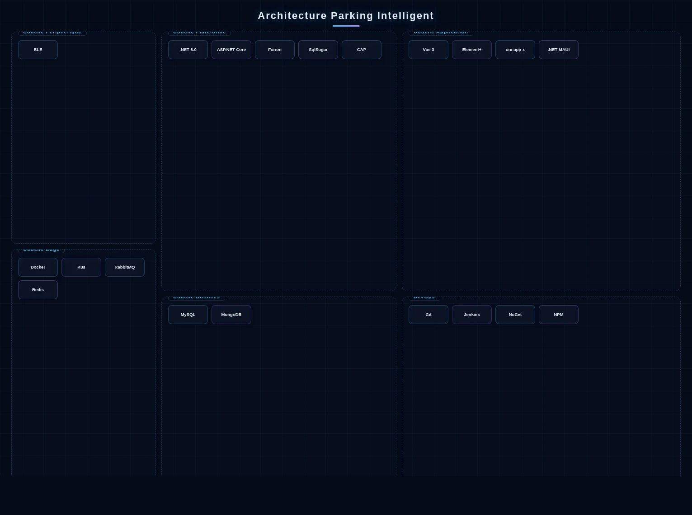

Architecture de la Solution

Architecture système Parking Intelligent
Le système de Parking Intelligent adopte une architecture à trois niveaux Appareil-Edge-Cloud. La couche appareils déploie des caméras de reconnaissance de plaques, des détecteurs magnétiques/vidéo de places de stationnement et des contrôleurs de barrières, avec des passerelles edge permettant les décisions de facturation locales et l'autonomie hors ligne. La plateforme cloud est construite sur des microservices .NET 8.0 + ASP.NET Core + Furion, avec des services principaux incluant la reconnaissance de véhicules (supportant plusieurs formats de plaques nationaux), la gestion des places (synchronisation d'état en temps réel Redis Cluster), le règlement de facturation (réconciliation asynchrone des transactions RabbitMQ, avec DotNetCore.CAP assurant la cohérence transactionnelle financière) et les rapports opérationnels (analyses multidimensionnelles MongoDB). La couche données utilise MySQL pour les données de membres et de transactions, MongoDB pour les enregistrements d'entrée/sortie et les preuves vidéo, avec SqlSugar complétant le mappage ORM multi-sources. Le côté gestion construit un back-office opérationnel avec Vue 3 + Element Plus, le côté conducteur développe un mini-programme multiplateforme avec uni-app x (Vapor Mode), et le côté préposé dispose d'une application native multiplateforme construite sur .NET MAUI, avec la synchronisation des données tri-terminaux en temps réel via des files de messages pour assurer un fonctionnement stable sous forte concurrence. DevOps utilise Git + Jenkins + NuGet/NPM pour la livraison continue, avec Docker + Kubernetes pour le déploiement élastique.
Composition de la Solution
Scénarios d'Application

Complexes commerciaux
Gestion parking multi-niveaux pour centres commerciaux et ensembles de bureaux, supportant la gestion des voies de marée aux heures de pointe.

Résidences
Entrée automatique des résidents, pré-enregistrement visiteurs, facturation flexible mensuelle/temporaire.

Hubs de transport
Gestion parking longue durée et service de recherche rapide de véhicule pour aéroports et gares.

Parking en rue
Retrofit intelligent des places de stationnement en bordure de route avec détection bimode et paiement électronique.
Avantages de la Solution
Le système supporte à la fois la gestion cloud et le déploiement local, configurable selon l'échelle du parking. L'intégration avec les systèmes de gestion de bâtiment et d'incendie permet le parking intelligent dans un écosystème de bâtiment intelligent unifié.
Valeur de la Solution
Augmentation du turnover parking de plus de 30%, réduction des coûts de main-d'œuvre de 60%, et raccourcissement du temps moyen de recherche de véhicule à moins de 2 minutes. L'optimisation data-driven des ressources parking crée une valeur continue pour les opérateurs.
Pratique Projet
AXLTeco a déployé des systèmes de parking intelligents dans plusieurs complexes commerciaux et communautés résidentielles à Lagos, réalisant la perception sans personnel et la gestion centralisée à distance avec une stabilité de fonctionnement dépassant 24 mois.